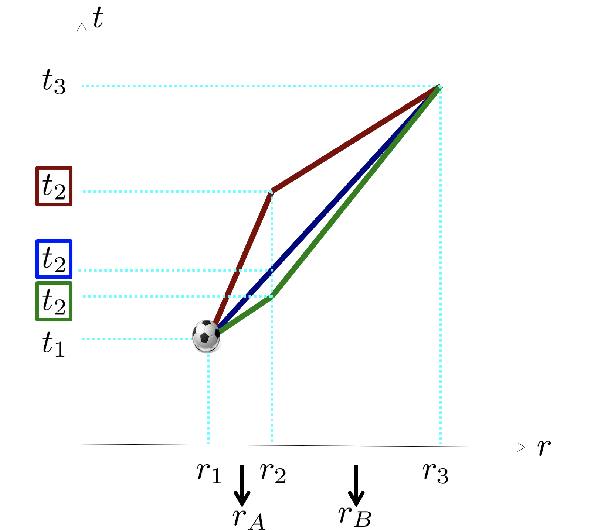

Forrige side🙂 🙁Maksimal aldringPADLET

Her ser vi igjen 3 mulige verdenslinjer, eller retter sagt det bittelille utsnittet av mulige verdenslinjer til ballen mellom høyde r1 til r3 fra tidspunkt t1 til t3 der det har konstant hastighet (rett linje) fra r1 til r2 og en (mulig) annen konstant hastighet fra r2 til r3. Her beveger ballen seg over flere skall så vi kan ikke anta lokalt inertialsystem for hele reisen. Dermed må vi bruke ß-geometri. Kan du sette opp et uttrykk for den totale egentida slik som du gjorde tidligere? Ikke bla om før du har et forslag.